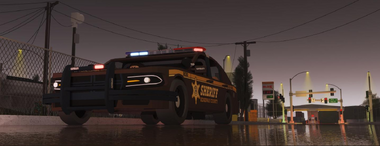
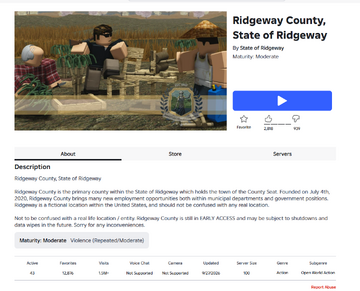

Ridgeway
Ridgeway, officially the State of Ridgeway, is a polity and community centered on Ridgeway County. Established on 4 July 2020 under a county charter within the United States, it developed a local government, judiciary, police institutions and a county game. Its original developers were Squareheaddude, devGralius and Pauljkl. Ridgeway separated from the United States during a dispute among its developers in January 2022.[1][2][3]

The county opened to the public on 21 November 2020. Designed around policing and local institutions, it offered an alternative to Washington, D.C. and Las Vegas. By January 2022, the division between Ridgeway's active community and the weakened federal government had become a prominent political issue. The developer separation ended the original three-person partnership, while Ridgeway continued independently. The original developers reunited in January 2024, when Pauljkl returned to Ridgeway after relinquishing ownership of nUSA.[4] Later relations with nUSA included disputes over membership, a formally declared war in July 2024 and subsequent arrangements for joint events.[5][6][7]
Origins and development
The county project
Ridgeway originated as a project by three developers who had previously worked within the nUSA community. Squareheaddude created the map, terrain, vehicles, visual identity and much of the game's visible equipment. Pauljkl and devGralius developed its backend, scripted features and technical optimizations. The partners initially kept development private. Squareheaddude later described a development period of almost a year before release, with approximately three quarters of that work conducted privately.[3]
Pauljkl described the project's purpose as rebuilding the policing experience offered by Washington and Las Vegas. In his account, their older code was vulnerable to exploitation, and a new county game would allow the developers to replace it and introduce different police interactions. Although the developers later disagreed about the distribution of work and the project's direction, their accounts agree on its origins as a joint undertaking with Squareheaddude responsible for building and Pauljkl and devGralius for scripting.[8][3]
A later Ridgeway community history dates the beginning of development to July 2019. By September 2020, the project was being publicly demonstrated: on 12 September, Squareheaddude announced a planned weekend stream and warned that the available screenshare places would be limited. A further preview stream took place immediately before the November launch.[9][10]
Establishment within the United States
Ridgeway's founding charter was adopted on 4 July 2020. H.R. 67, introduced that day by ZartaVex with Risen_Orbs, Libres, JordiHarris and Ridgeway's Developer Oversight, provided for the admission of Ridgeway County within the State of Ridgeway. The congressional archive classifies the measure as Public Law 80-11. It authorized the county to maintain defense forces and allowed appeals from its judiciary to the United States Supreme Court.[1]
The charter defined Ridgeway County as a political subdivision of the United States and designated the City of Milton as its seat. It distinguished the county's local institutions from the federal government while binding them to the United States Constitution. County officers' oaths required them to uphold that Constitution, and eligibility for the County Board included a period of United States citizenship.[2]
Ridgeway nevertheless possessed considerable local autonomy. Its governmental structure included an elected five-member County Board, an elected County Executive, county courts and elected law-enforcement offices. The Board served four-month terms and the Executive a six-month term. The charter also recognized municipal police and fire services, the Sheriff's Office, State Police, National Guard and Law Enforcement Training Center.[2]
Developer Oversight held extensive authority over the project's practical operation. The charter reserved control of groups, records and technical resources to the developers and required their approval for changes affecting game systems. They could veto measures affecting the game or community welfare, and charter amendments required their consent. This made the developers' partnership consequential to both the county's institutions and its continued development.[2]
Public launch and growth, 2020–2021
Paid access and initial reception
Ridgeway County opened on 21 November 2020 with an initial access price of 1,000 Robux. The launch announcement introduced the county's separate communications server and promised information about the first Law Enforcement Training Center intake in both the nUSA and Ridgeway communities. The developers invited purchasers to join them for demonstrations and bug testing.[5]
Launch-day access was disrupted by a Roblox purchasing problem. Squareheaddude directed users to a separate purchase experience before joining the main game. That evening, Pauljkl thanked purchasers and said the reception had exceeded the team's expectations. The following day, Squareheaddude announced planned releases of the National Guard and Law Enforcement Training Center alongside fixes for launch bugs.[11]
The price was reduced to 500 Robux on 1 December 2020 and to 100 Robux on 18 January 2021. These changes substantially lowered the cost of entering the county, although access remained paid at those dates.[12]
Local institutions and the federal community
Ridgeway's emphasis on county institutions gave its police, courts and elected offices a distinct identity. Its local government operated under a detailed charter rather than functioning solely as another federal city. Law-enforcement recruitment was tied to the county's training system, while public demonstrations, development notices and bug testing helped organize the community around the game.[2][5][11]
Its association with nUSA continued after release. On 2 October 2021, ShadowCulture explicitly included Ridgeway among the assets moderated by the Coalition Against Abuse. At the same time, the county's own communications and local institutions increasingly provided a separate center of activity.[13][5]
That growth did not produce uniform enthusiasm throughout nUSA. In June 2021, GeorgeGodsent argued that Ridgeway was sustaining agencies while the wider community struggled with electoral enthusiasm. Other participants complained about development priorities or preferred the style of the older cities. These contemporary disagreements show that Ridgeway's appeal and its relationship to federal activity were contested well before the developer separation.[14]
Developer separation and independence, January 2022
Breakdown of the partnership
The developer dispute involved both the direction of the game and the partners' working relationship. Their published accounts described disagreements over moderation, outside influence, development effort and attempts at reconciliation. Both sides presented the relationship as having deteriorated over an extended period, although they differed sharply over responsibility.[3][8]
On 14 January 2022, Squareheaddude issued a memorandum announcing that the partnership should be dissolved. He alleged that Pauljkl had behaved destructively and publicly disparaged his contributions. Squareheaddude also acknowledged that he and devGralius had contributed to the drama and neglected the wider community amid factional conflict. The memorandum rejected their own departure as the preferred solution and promised further updates after the hiatus.[3]
Pauljkl's response attributed the deterioration partly to outside influence and disagreements about management. He argued that concerns had not been communicated effectively and defended his development work. He also disputed the handling of moderation cases, particularly the definition and enforcement of rules concerning transfers of items between accounts.[8]
An edited recording uploaded by Coulter Ellis on 15 January preserves an argument with Pauljkl in which Squareheaddude proposed 40 percent revenue shares for himself and David and 20 percent for Paul. Paul's written response instead said Squareheaddude's proposed arrangement assigned David the 20 percent share; Paul advocated equal 30 percent shares with a further 10 percent reserved for advertising. The participants' accounts therefore disagree about the proposed allocation.[15][8]
Squareheaddude also alleged that Paul had threatened legal action and described an unsuccessful reconciliation after Paul's roles were removed. He advocated separating the communities, while Paul referred to an earlier recorded call. The alleged threats remain Squareheaddude's assertions.[15]
Separation from nUSA
Political tensions were already public by 9 January. President TacticalRock101 described relations between nUSA and Ridgeway as a “Cold War” and said that the parties had been unable to agree on battles. On 10 January, he resigned, connecting the federal government's difficulties to management priorities and the state of its remaining city.[16][6]
The dates assigned to Ridgeway's separation differ. The older nUSA encyclopedia places secession on 9 January and recognition on 15 January. Ridgeway's later history associates independence with the developer separation of 14–16 January and identifies 15 January as the date commemorated by its County Board. Contemporary nUSA discussion includes claims of independence on both 9 and 15 January. The political confrontation, dissolution of the development partnership and adoption of independent institutions were related developments within the same month.[17]
Squareheaddude and devGralius continued the Ridgeway project after the original partnership ended. A state constitution bears a ratification date of 20 January 2022. It provided for a governor, lieutenant governor, seven-member Senate and state judiciary. Ridgeway's community history dates the transition to its state-government structure to 28 March 2022, a later milestone than the date printed on the constitution.[18][19]
Relationship to the nUSA activity crisis
Ridgeway's separation occurred during a wider crisis of federal activity and confidence. In his resignation, TacticalRock101 alleged that management and developers had abandoned nUSA for Ridgeway, that the federal community's remaining functioning city was outdated and that he had received insufficient support to carry out the presidency. These were the outgoing president's criticisms, rather than a technical audit of either game.[6]
On 16 January, Speaker MasonRockefeller described nUSA as severely weakened and approaching collapse. He said colleagues had moved to Ridgeway, American Roleplay and other communities. His proposed response was to consolidate resources and cooperate with the president and Senate leadership to rebuild the federal community.[20]
The contemporary activity screenshot illustrates the imbalance: at the displayed time on 14 January, Ridgeway County showed 69 active players and Washington showed zero. It establishes that contrast at one instant, rather than either game's average population or the direction of every player's movement.[21]
The crisis cannot be reduced to the developer confrontation alone. The discussion of weak electoral enthusiasm in June 2021 preceded the January split, and MasonRockefeller identified several destinations for departing members. Ridgeway's growing activity, disputes about attention to the older cities and the eventual separation formed part of that broader loss of participation and institutional confidence.[14][20]
Independent institutions
The state constitution established separate legislative, executive and judicial branches. The Senate comprised seven members serving four-month terms. The governor served a four-month term, commanded the state's forces and exercised executive powers, with the lieutenant governor occupying additional legislative and military responsibilities. The constitution also provided for an elected attorney general, secretary of state and sheriffs.[19]
The judiciary included a Supreme Court with a chief justice and four associate justices, together with a Superior Court for civil and criminal proceedings. The Supreme Court possessed appellate jurisdiction and authority over court administration. Constitutional oaths required allegiance to the State of Ridgeway. Developer Oversight retained a role in constitutional amendment alongside amendment by popular election.[19]
The independent constitution thus differed from the original county charter in its framework of allegiance and institutions. The earlier charter placed the county within the United States and provided federal appellate connections; the state constitution organized authority around Ridgeway's own government and courts.[2][19]
Later relations with the United States
Boulder County and membership disputes
During 2022, nUSA developed Boulder County as another county project. In October, Pauljkl described planned features beyond those of the older Ridgeway project, including player-created fires, towing, a casino, vehicle customization, jobs outside formal teams and player-run businesses. He said assembling a development team had taken time. Boulder subsequently opened in November.[22]
Boulder's launch produced a further disagreement over participation in both communities. On 26 November, MasonRockefeller criticized what he called Ridgeway's “Subversion Act” and alleged that it restricted members of the nUSA community. He introduced H.R. 25 to prohibit discrimination against immigrants, including restrictions based on Ridgeway membership. His announcement expressed an intention to secure passage; it does not itself establish that the bill became law.[23]
Reunion of Developer Oversight, January 2024
On 17 January 2024, Squareheaddude announced the reunion of Ridgeway's original Developer Oversight team, almost two years after its separation. He said that the disagreements responsible for the January 2022 breakdown had been resolved and that Pauljkl had relinquished ownership of nUSA to return to Ridgeway full-time. The announcement presented the renewed partnership as a reconciliation between the original developers.[4]
The reunited team divided responsibilities between Pauljkl, who would lead scripting and backend development; Squareheaddude, who would lead game design and graphics; and David (devGralius), who would lead web services and government. Squareheaddude said development had already resumed and that the request to restore access to the game had been submitted. He anticipated reopening within the next few business days and a sequence of updates introducing content planned before the downtime, followed by suitable features from Boulder County. Further announcements about government and departments were assigned to David.[4]
The accompanying questions and answers linked this development reunion to the ownership change in the United States. Squareheaddude said nUSA would return to its original gameplay style under its new ownership, while Boulder would remain down indefinitely and cease to be part of nUSA. He described Boulder's quality-of-life features and backend fixes as resources for advancing Ridgeway. These were the announced development plans; the post did not establish the date of reopening or completion of the proposed transfers.[4]
Pauljkl's own nUSA announcement the same day identified Dilliuss and UKR41NIAN as the incoming co-owners and said the Boulder games would be discontinued after the transfer. The two announcements connected the restoration of Ridgeway's original development partnership with a change in nUSA's ownership and municipal development direction.[24]
The July 2024 war and subsequent cooperation
In July 2024, the United States formally declared war on Ridgeway through H.J. Res. 2, signed by President GeorgeGodsent. Management nevertheless recognized the communities' overlapping membership. On 11 July, UKR41NIAN announced that neither community should sanction people merely for belonging to the other, with exceptions concerning personnel who volunteered for deployment.[7][25]
President-elect Blanket announced an end to the war on 22 July. The arrangement provided for joint events and allowed United States military personnel to join Ridgeway's State Guard as dual citizens. In explaining the decision, he described the war as an effort to generate activity and criticized the absence of adequate preparations, repetitive raids and the lack of an official battle game. The settlement was framed as cooperation rather than a surrender or a victory imposing concessions.[7]
Connections also persisted through individual officials. In August 2024, an nUSA management announcement praised David's work in its military and public-outreach management while acknowledging that he managed Ridgeway. The separation therefore did not eliminate shared personnel or later cooperation.[26]
Later activity and retained affiliations

A screenshot supplied for 1 October 2026 shows Ridgeway County with 43 active players, more than 1.5 million visits and 12,876 favorites. Its displayed description still labels the experience early access and gives 4 July 2020 as the founding date. The group screenshot from the same reported period displays more than 42,200 members. These figures measure different forms of participation: concurrent players, cumulative visits and group membership.[27]
The affiliates screenshot also shows police, fire, sheriff and law-enforcement-training groups retaining “USA” prefixes. These surviving names illustrate links to Ridgeway's earlier organization, but affiliation and naming do not by themselves establish continuing United States governmental authority over the independent state.[27][2][19]
Gallery
-
County development image posted by Squareheaddude, 12 September 2020, 2:05 a.m. PDT.
-
Ridgeway and Washington player counts, 14 January 2022, 6:21 p.m.; timezone and photographer unknown.
-
Legacy “USA” group names among Ridgeway's affiliates. Contributor-reported capture: 1 October 2026, around 1:30 a.m. Eastern.
See also
References
- ↑ 1.0 1.1 80th Congress, Public Law 80-11, “Ridgeway County Admittance of 2020”, archived with H.R. 67 as amended and the original county charter. H.R. 67 was introduced on 4 July 2020; sections 3–6 establish its effective-date conditions, admission, Supreme Court appellate jurisdiction and authority to maintain defense forces. The introduction date is not a separately verified date of presidential signature.
- ↑ 2.0 2.1 2.2 2.3 2.4 2.5 2.6 Charter of Ridgeway County, cover dated “Adopted July 4th 2020”; articles I–III, V and XII–XIII, pp. 5–14 and 26–28.
- ↑ 3.0 3.1 3.2 3.3 3.4 Squareheaddude, “Developer Oversight Memorandum: Letter in Regard to Pauljkl”, 14 January 2022, pp. 1–2. This is a participant's account of the partnership's dissolution; allegations about other participants are attributed accordingly.
- ↑ 4.0 4.1 4.2 4.3 Squareheaddude (Square), “The Return of Ridgeway & The Original Developer Oversight Team,” Ridgeway Discord announcement, 17 January 2024, 12:56 p.m., followed by a questions-and-answers post. Transcript supplied by a contributor on 1 October 2026; timezone and original message permalink were not supplied. The announcement supports the reported reconciliation, return and intended division of responsibilities; its reopening timetable and feature transfers are plans rather than evidence of their completion.
- ↑ 5.0 5.1 5.2 5.3 Squareheaddude, launch announcement, 21 November 2020, 4:42 p.m. PST, and release notice, 5:02 p.m. PST, nUSA #announcements.
- ↑ 6.0 6.1 6.2 TacticalRock101, presidential resignation, 10 January 2022, 10:15 p.m. PST, nUSA #white-house.
- ↑ 7.0 7.1 7.2 GeorgeGodsent, signing of H.J. Res. 2, 11 July 2024, 8:06 p.m. PDT; President-elect Blanket, “Ending the War,” 22 July 2024, 7:07 p.m. PDT; GrandpaGobies, resolution notice, 22 July 2024, 7:17 p.m. PDT, nUSA #white-house, preserved in
discord-archive-7012-1790806268742.txt, lines 31844–31860 and 31405–31433. See also Ridgeway resolution R7-08, “To Resolve the Defensive War Against the nUSA”. - ↑ 8.0 8.1 8.2 8.3 Pauljkl, “Developer Memorandum”, undated response associated with the January 2022 separation, pp. 1–6; project origins p. 1, revenue and reconciliation p. 2, development and technical problems p. 3, moderation dispute pp. 4–5. Statements about other participants are his allegations, not independent findings.
- ↑ State of Ridgeway Wiki, introductory community history, revision 274, 16 January 2023. This later account dates development to early July 2019 and establishment to 4 July 2020.
- ↑ Squareheaddude, public-stream announcement and promotional image, 12 September 2020, 2:05 a.m. PDT, nUSA #announcements. daniaII, moderation notice for the Ridgeway preview stream, 20 November 2020, 4:40 p.m. PST, nUSA #nusa-updates, preserved in
discord-archive-2642-messages.txt, around line 18825. - ↑ 11.0 11.1 Squareheaddude, purchasing workaround, 21 November 2020, 5:40 p.m. PST; Pauljkl, reception and testing message, 21 November 2020, 9:19 p.m. PST; Squareheaddude, planned institutional releases and bug fixes, 22 November 2020, 12:55 p.m. PST, nUSA #announcements. These notices describe announcements and reception, rather than a measured retention rate.
- ↑ Squareheaddude, access-price announcements, 1 December 2020, 8:16 p.m. PST, and 18 January 2021, 8:16 p.m. PST, nUSA #announcements, preserved in
discord-archive-597-messages.txt, around lines 4549–4559 and 4732–4745. - ↑ ShadowCulture, “Impersonation of CAA Officials,” 2 October 2021, 8:29 a.m. PDT, nUSA #nusa-updates, preserved in
discord-archive-2642-messages.txt, around lines 20203–20218. The notice expressly describes Ridgeway as a nUSA asset within the Coalition Against Abuse's remit. - ↑ 14.0 14.1 GeorgeGodsent, activity and election discussion, 30 June 2021, 12:14 p.m. PDT; Redzalio, development-priority criticism, 12:16 p.m. PDT; chuddestroyer2, discussion of players preferring Washington's style, 28 June 2021, 10:05 p.m. PDT, nUSA #general-chatroom. These are contemporary opinions, not population statistics.
- ↑ 15.0 15.1 Coulter Ellis, “Ridgeway County in 8 minutes. (TURN CLOSED CAPTIONS ON)”, uploaded 15 January 2022. Revenue discussion 0:02–0:34; alleged legal threat and attempted reconciliation 2:49–3:15; separation and argument 6:23–7:18. Speaker identification follows the video's supplied captions, which match the contributor's transcript. It is an edited excerpt, not a complete record of the dispute; its upload date does not independently establish when the call occurred.
- ↑ TacticalRock101, “Cold War” notice, 9 January 2022, 10:08 p.m. PST, nUSA #white-house.
- ↑ Ridgeway, nUSA encyclopedia, revision 372, 21 December 2022; Developer Separation Incident, Ridgeway encyclopedia, revision 828, 5 October 2023. The latter is a retrospective account containing allegations and links to the two developers' primary statements; its accusations are not adopted as independent findings. Kai Silverman, independence comments, 9 January 2022, 7:41 p.m. PST, and 15 January 2022, 11:40 a.m. PST, nUSA #general-chatroom. A signed federal recognition instrument has not been verified, so the secondary account's precise recognition date is not treated as independently established.
- ↑ Developer Oversight, Ridgeway encyclopedia, revision 830, and Ridgeway State Government, revision 743, 31 January 2023. These retrospective institutional accounts describe the remaining developers and the March transition.
- ↑ 19.0 19.1 19.2 19.3 19.4 Constitution of the Great State of Ridgeway, cover: ratified 20 January 2022; articles II–VI, pp. 4–10.
- ↑ 20.0 20.1 MasonRockefeller, statement on the condition of the country, 16 January 2022, 6:29 p.m. PST, nUSA #white-house.
- ↑ User-supplied Roblox activity screenshot, visible clock dated 14 January 2022, 6:21 p.m., timezone unspecified. Original photographer unknown. The two experience cards display 69 and zero active players respectively.
- ↑ Pauljkl, Boulder development update, 3 October 2022, 4:18 p.m. PDT, nUSA #nusa-updates, preserved in
discord-archive-2642-messages.txt, around lines 21390–21422; MasonRockefeller, Boulder launch and H.R. 25 statement, 26 November 2022, 6:08 p.m. PST, nUSA #white-house, preserved indiscord-archive-7012-1790806268742.txt, around lines 56179–56207. - ↑ MasonRockefeller, 26 November 2022, 6:08 p.m. PST, nUSA #white-house, preserved in
discord-archive-7012-1790806268742.txt, around lines 56179–56207; H.R. 25, “To prohibit the discrimination of immigrants”, introduced 26 November 2022. The description of Ridgeway's policy is attributed to the Speaker's statement. - ↑ Pauljkl, ownership-transfer announcement, 17 January 2024, nUSA #announcements.
- ↑ UKR41NIAN, “NO SANCTIONS!”, 11 July 2024, 7:39 p.m. PDT, nUSA #nusa-updates, preserved in
discord-archive-2642-messages.txt, around lines 28390–28420. The notice described discussions with largeTitanic2 and dave and reciprocal protections for ordinary dual members. - ↑ “Group Staff Spotlight,” posted by a now-deleted account, 11 August 2024, 11:40 p.m. PDT, nUSA #nusa-updates, preserved in
discord-archive-2642-messages.txt, around lines 29346–29365. The announcement identifies dave as Deputy Military GM and Deputy Manager of Public Outreach while managing Ridgeway. - ↑ 27.0 27.1 Experience-page screenshot and community-affiliates screenshot, supplied by the contributor, who reported capture around 1:30 a.m. Eastern on 1 October 2026. Original photographer unknown; the images contain no capture clock. The reported simultaneous Washington count of three was not independently pictured, so it is not used as a verified numerical comparison.